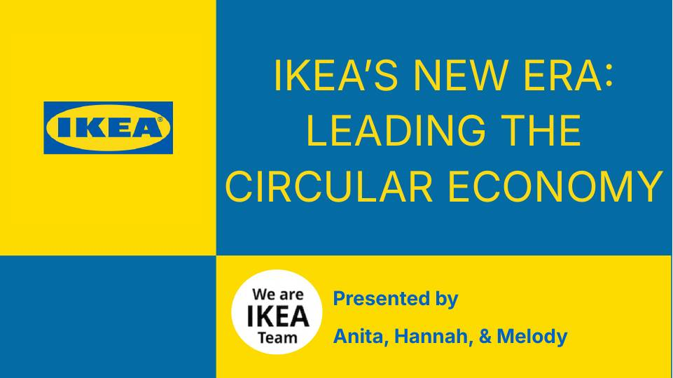
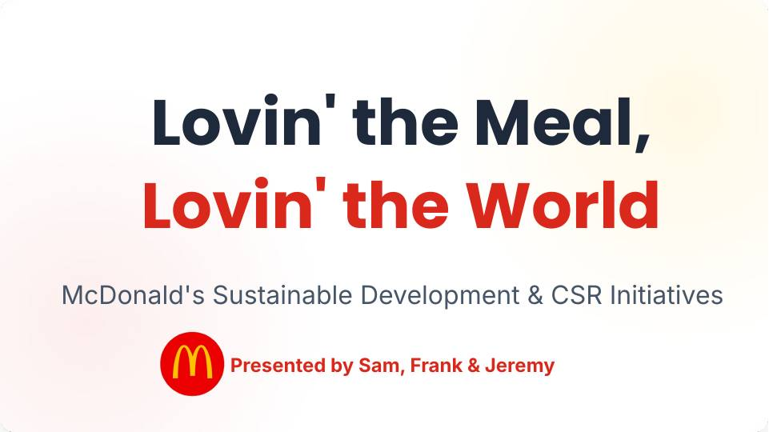
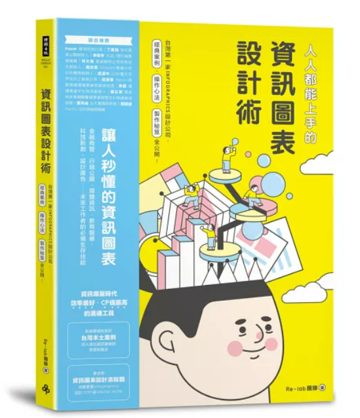
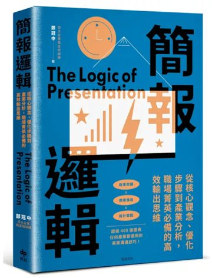
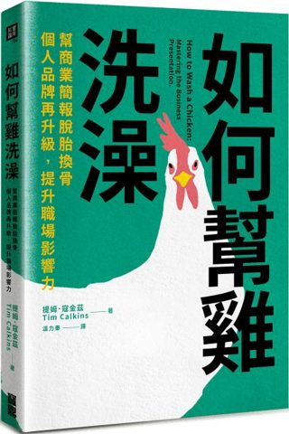

簡報是什麼？
簡報是一種「漸進式的說服」過程。聽眾從原本的位置（想法、立場、情緒），一步步移動到講者設定的目標。這個過程需要構思、設計與排練。
出處：簡報。小學堂
簡報是一種「漸進式的說服」過程。聽眾從原本的位置（想法、立場、情緒），一步步移動到講者設定的目標。這個過程需要構思、設計與排練。
出處：簡報。小學堂
好簡報不只是漂亮的投影片，而是讓聽眾看得懂、記得住、願意行動。投影片負責「一眼就懂」，講者負責「說服人心」。
升學面試、專題報告、求職面試、職場提案，都要把想法清楚地說給別人聽。會簡報的人，更容易被看見。
簡報可以改變世界。你或許不需要改變整個世界，但是你肯定可以利用簡報改變你的世界。Nancy Duarte 南西・杜爾特 看她的 5 個簡報原則（影片，另開分頁）
勾選你常遇到的狀況，下面會告訴你該先看哪一章。
舉例下面是其中一種評分規準，每位老師、每個課程的比例都不一樣。
舉例：期末發表評分規準（發表時間 7 分鐘）
內容占一半，設計占 15%。想的清楚，才能講的清楚，所以先想清楚，再做漂亮。
先搭框架，再填內容，最後才設計。
色、字、圖搭配得舒服，看起來專業。
內容的先後順序清楚，聽眾不會迷路。
眼睛從標題走到重點的路線順暢。
每一項都有 BEFORE／AFTER，左右拖曳看差別。
整句改關鍵字，一頁一重點。
主色、輔色、強調色，3 種就夠。
刪掉不幫助理解的裝飾，留下重點。
用色塊區分視覺區域，用畫線標出重點。一塊一個知識點，眼睛就知道從哪裡讀。
留白讓重點呼吸。看起來「空」的地方，其實是在告訴觀眾：看這裡。
文字和圖片不要貼著投影片邊緣，四周至少留出一指寬。
行距約 1.2 到 1.5 倍，段落之間再多留一點，眼睛才有地方休息。
最重要的東西放大，周圍的空間留給它。留白越大，那個東西越顯眼。
功能名稱和位置會依軟體版本、系統不同而略有差異。找不到時，在軟體的搜尋列輸入功能名稱就能找到。
老師講解時、自己課後複習時都好用。可以依主題篩選。
更多美感排版技巧：日本「Layout song」教你 4 大排版美學技巧（影片，另開分頁）
這場簡報要改變聽眾什麼？
他們是誰？在乎什麼？
用聲音、手勢、停頓，把想法交給對方。
上台前，先回答這四個問題：
年齡、身分、人數。
哪些不用再解釋，哪些要從頭講。
從他們的角度出發，才能講到心裡。
這就是這場簡報的目的。
走動、站姿、手勢、音量、停頓、服裝、團隊合作、轉折。勾選你願意先練習的項目。
對照第一章的評分範例（發表 7 分鐘）。建議配速：前言 45 秒、內容 5 分 30 秒、結論 45 秒。
簡報提點與範例展示：開啟講者整理的文件（另開分頁）
每一步都附上可複製的提示詞，把【】換成你的內容就能用。
AI 會寫得很像真的，數字與資料要自己找來源確認。
不要貼上姓名、電話、班級名單等個人資料。
圖片與文字都要確認授權，並寫出處。
講稿用自己的話說，並遵守學校的使用規定。
工具會一直換，原則不會變：對齊、放大、對比、重複。
提升美感與閱讀性，從這 12 個難題開始，其中 3 個是字太多的問題。每個都能拖曳比較前後。
每個單元都是：看亂版本，動手改，馬上比較 BEFORE／AFTER。講者先示範，再請大家用自己的手機做。
貼上這個網站的網址，產生 QR Code 投影給大家掃。
做完簡報後逐項檢查。全部打勾，就可以放心上台。
選一頁你自己做過的投影片，最好是文字很多的那頁。
對齊、放大、對比、重複，加上減法：刪到只剩重點。
和旁邊的人交換，各自講出：改了什麼、為什麼。
先看影片，感受現場怎麼說；再看簡報，找出他們用了哪些原則。


不用都做到，看看他們做到哪幾項。
聲音大小、停頓、眼神、手勢，哪裡讓你想繼續聽？
對齊、放大、對比、重複，每一頁用了哪一個？
結尾有沒有回到開頭？這就是評分規準裡的「前後呼應」。



購買連結為博客來的書名搜尋結果，請以實際版本與價格為準。
…and more
內容整合自原簡報〈簡報力大爆發：打造超吸睛簡報〉。簡報的定義引自「簡報。小學堂」，5 個簡報原則出自 Nancy Duarte。範例專區的簡報與影片為學生作品。
照 4P 走：準備、製作、練習、報告。先想清楚，再做漂亮。
色、字、圖、版面。對比要夠、對齊要齊、重點放大，留白讓重點呼吸。
先定目的、再看觀眾，開口前 3 句背熟，用計時器練習。
拆大綱、濃縮文字、模擬提問交給 AI；取捨、查證、說自己的話自己來。
拿自己的投影片，用健檢清單一次改一個地方，看前後差別。
遇到問題，回到 Q&A 與範例專區找答案。
把【 】換成你自己的內容，貼給任何 AI 就能用。依 4P 分成四組。
角色（你是誰）＋情境（對誰、多久）＋任務（要做什麼）＋格式（幾頁、幾字）。不夠好就追問：「再短一點」「換成更口語」「給我另外 3 種」。
回家後再練一次。老師拿去示範，學生拿去自學。
把今天帶走的重點、AI 指令、練習連結，都放在這一頁。
https://chaifish-teacher.github.io/slideworkshop/takeaway.html